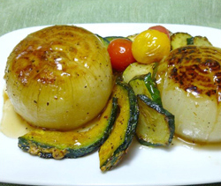

玉ねぎのグリル
- 調理時間：30 分
- （一人当たり）
- カロリー：258kcal
- たんぱく質：3.8g
- 脂質：13.4g
- 塩分：1.0g

＜２人分＞
- 玉ねぎ
- 2個
- カボチャ
- 100g
- ズッキーニ
- 1/2本
- ミニトマト
- 1/2パック
Ａ
- ・バルサミコ酢
- 大さじ2
- ・水
- 大さじ2
- ・オリーブオイル
- 大さじ2
- ・塩
- 小さじ1/3
- ・コショウ
- 少々

- 玉ねぎは皮をむき、塩、コショウ（分量外）をふる。ラップに包んで電子レンジで柔らかくする。
- カボチャは薄切りにする。ズッキーニは７～８ｍｍ幅の輪切りにする。
ミニトマトはヘタを取る。 - Ａの材料を混ぜ合わせ、ドレッシングをつくる。
- ①の玉ねぎはフライパンで焦げ目をつける。②の野菜も同様にフライパンで炒め、焦げ目がついたらお皿に盛り付ける。
- 野菜を取り出したフライパンに合わせたドレッシングを加えて煮詰め、上にかけて完成。
玉ねぎのグリル
玉ねぎの栄養成分にはそれほど特出するものがないのですが、食物繊維やカリウムが含まれますし、安価で経済的。どんな料理とも相性が良いので使い勝手の良い食材といえるでしょう。短時間の加熱でもしっかり甘みがでて柔らかくなるので、もう一品というときにもとても助かります。今回のレシピのように丸ごと使って仕上げれば、大胆な面白いレシピに仕上がります。
注目される成分に「硫化アリル」があります。硫化アリルは血液をサラサラにして、血流をよくし血圧を下げる効果があります。消化を促し、食欲増進効果も期待されます。ただ、生食で大きな効果を発揮するので薬味にしたり、サラダなどで食べることもおすすめです。